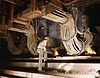

smelting

Definition: Smelting is a process of applying heat and a chemical reducing agent to an ore to extract a desired base metal product. It is a form of extractive metallurgy that is used to obtain many metals such as iron, copper, silver, tin, lead and zinc. Smelting uses heat and a chemical reducing agent to decompose the ore, driving off other elements as gases or slag and leaving the metal behind. The reducing agent is commonly a fossil fuel source of carbon, such as carbon monoxide from incomplete combustion of coke—or, in earlier times, of charcoal. The oxygen in the ore binds to carbon at high temperatures as the chemical potential energy of the bonds in carbon dioxide (CO2) is lower than that of the bonds in the ore.
Source: Wikipedia
Wikipedia Page (Something wrong with this association? Let us know.)
Wikidata Page (Something wrong with this association? Let us know.)